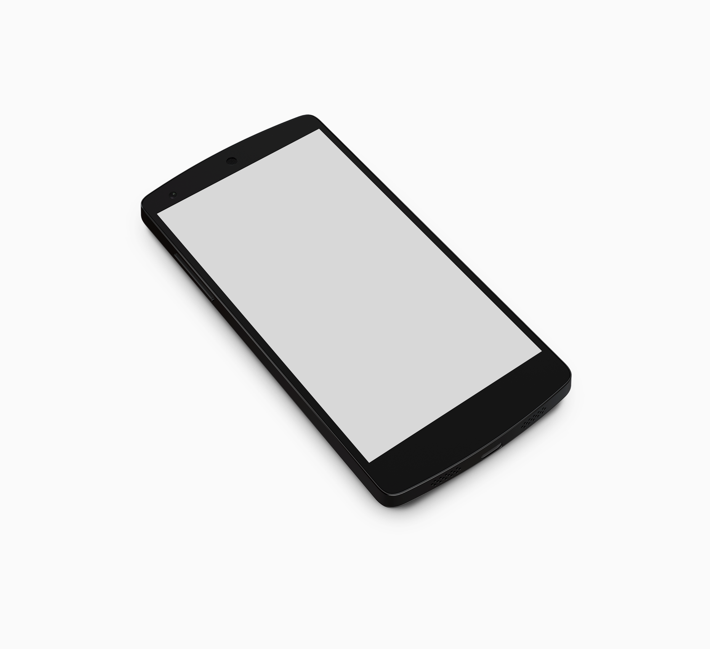
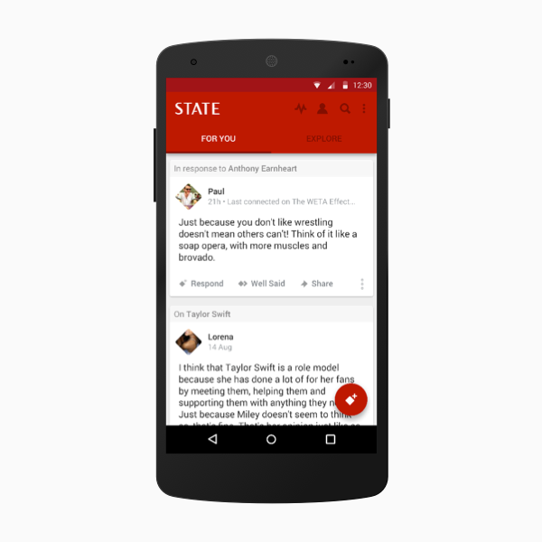
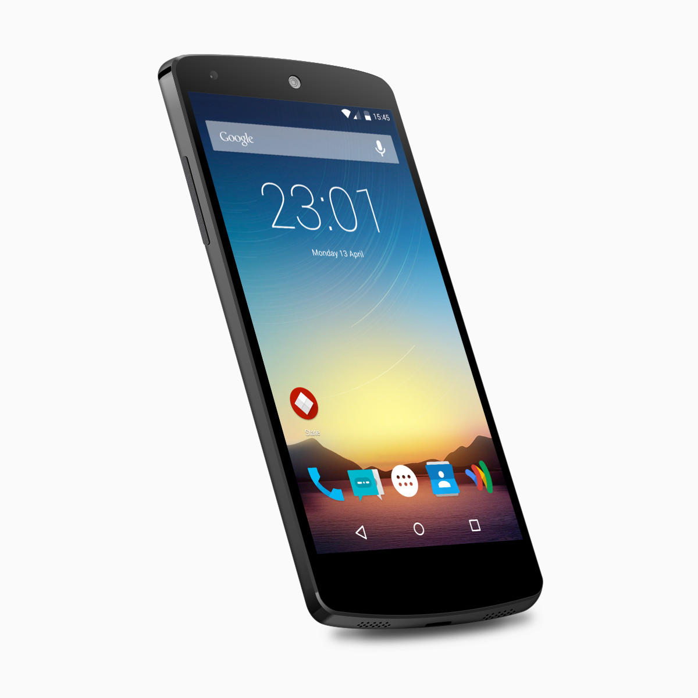
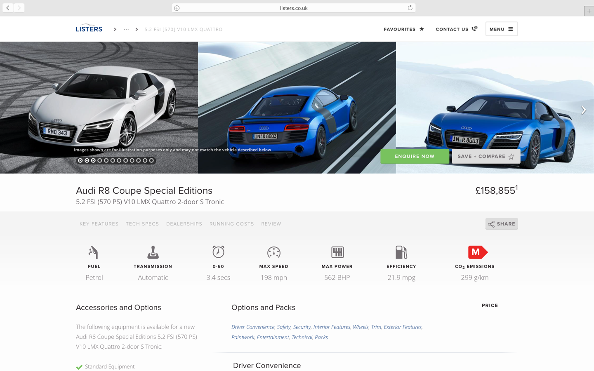
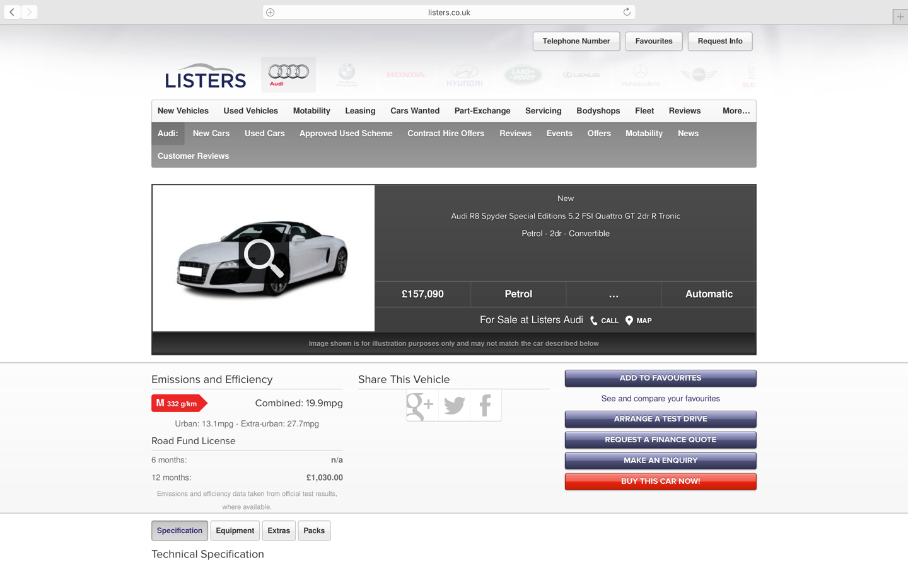
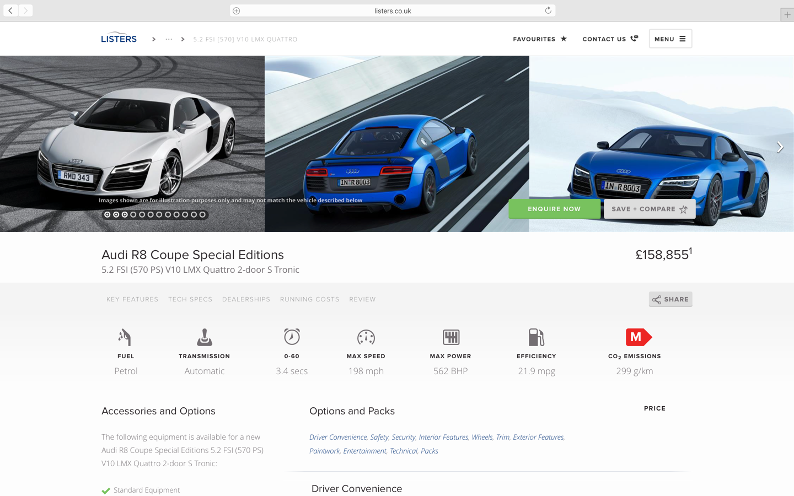
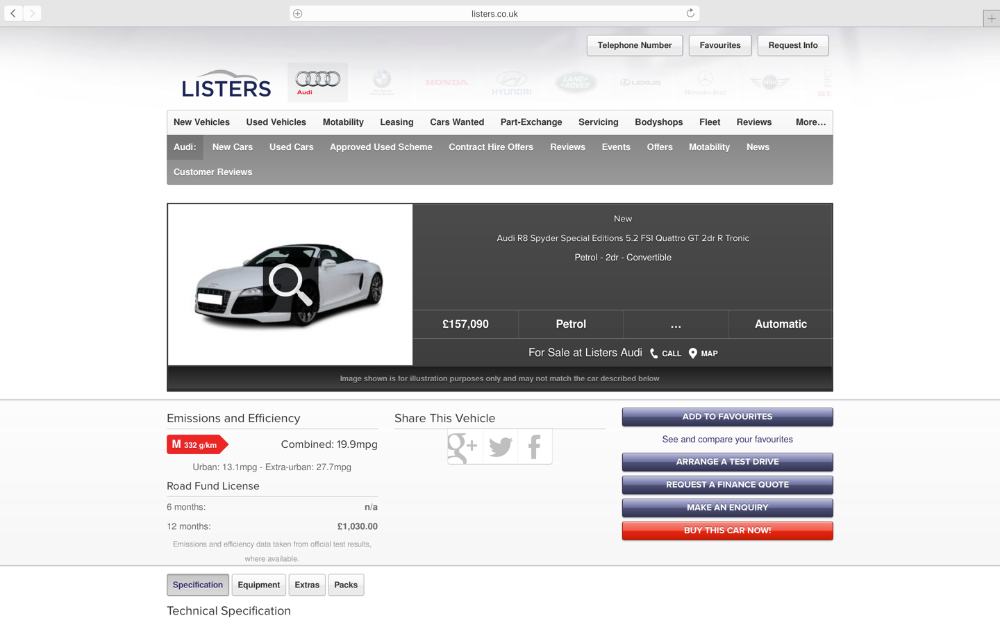

With the help and support of an incredible team, I helped craft and design the world's structured opinion network. State is able to find people who think similarly to you based on the semantic, uncentralised and open web. We've built innovative algorithms that shape your stream and bring you the most relevant opinions.



I introduced the Material Design language to the State app—including a new launcher icon—working closely with the Android dev team.
I worked with an incredible and energetic team over at Wonder to help realign the aspirations of the company with the ever changing and competitive video market. First we realigned the brand and design of the mobile app to match the target market audience, and then we started work on a ground breaking workflow web application for indie movie makers and large production houses alike.


 


